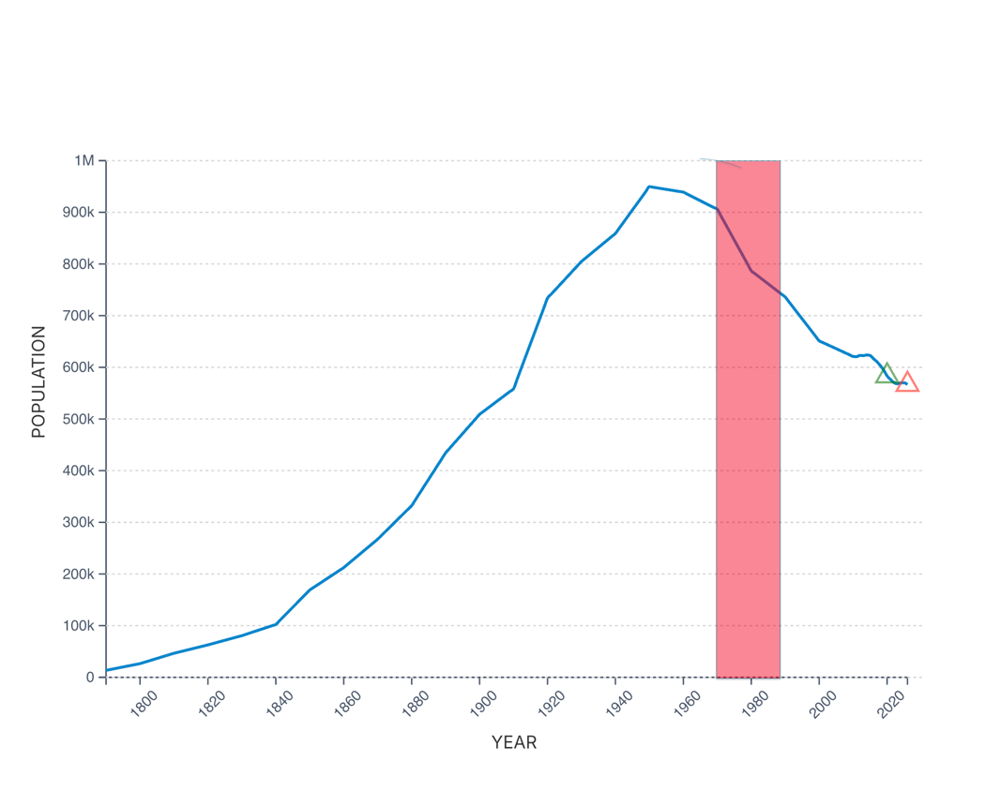
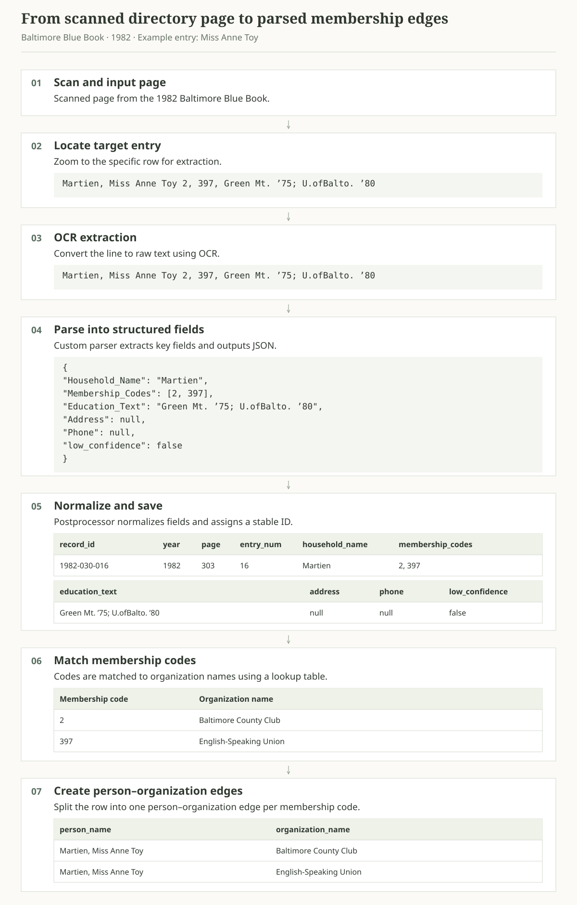
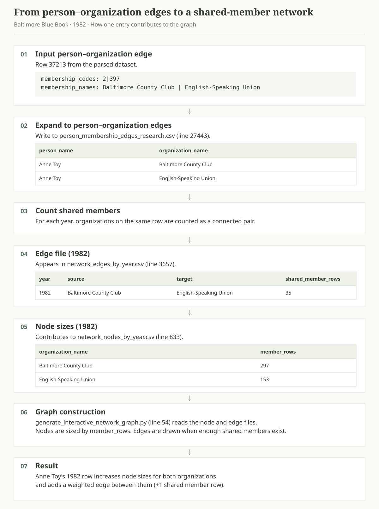
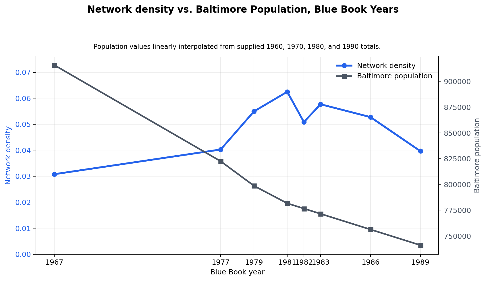
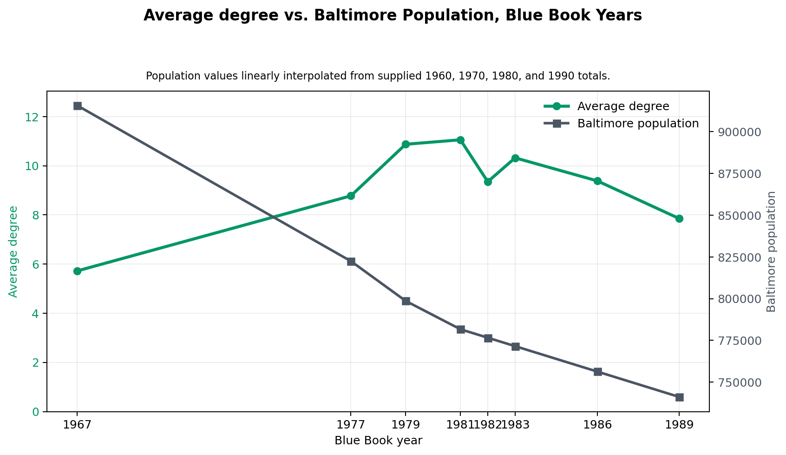

Context and motivation
In 2024, during my sophomore year at UMass, I had the privilege of working as an economics research assistant. The professor was conducting a social network analysis project and had collected Social Register books that he intended to digitize and convert into clean data. I was specifically tasked with digitizing a series of Baltimore directories called Baltimore Blue Books using OCR technology.
The work involved photographing every page of each book, from front to back. I spent roughly 1–2 hours a day scanning approximately 10 books over two and a half months.
Introduction
“Voting with their feet, Baltimoreans continue to flee these
problems by the thousands.”
— Walters & Miserendino (2008)
Baltimore’s decline was far from inevitable, although people at the time often viewed it differently. In 1958, planners projected that the city’s population would grow steadily from 950,000 residents in 1950 to 1.2 million by 1980. Instead, Baltimore reached its population peak in 1950 and entered decades of decline driven by deindustrialization and broader economic change (Boone et al., 2014).
This transformation has been extensively studied from economic and demographic perspectives, but far less attention has been given to how it affected the city’s social and institutional networks. This project reconstructs Baltimore’s elite organizational landscape using the Baltimore Blue Books and Society Visiting Lists from 1967 to 1989, converting thousands of historical directory entries into a network of thousands of households, clubs, societies, and civic organizations.
By examining how these connections evolved over time, the project provides a new perspective on whether Baltimore's elite institutions merely survived the city's decline or whether the relationships linking them together also changed.
The data
As previously explained, all of my data came from Baltimore Blue Books, which contain Society Visiting Lists—social directories used by upper-class families to navigate various social circles. I like to describe these books as an early version of LinkedIn. They contain tens of thousands of household listings, including household members’ names and the clubs or organizations to which each person belonged. Unlike LinkedIn, these books were not continuously updated databases; a new edition was published each year to reflect changes.
The professor had collected books from the following eight years:
1967, 1977, 1979, 1981, 1982, 1983, 1986, 1989.
These editions span more than two decades of Baltimore’s decline. The graph below places the study period in the context of Baltimore’s historical population trends.

From Blue Book to data
The Baltimore Blue Books and Society Visiting Lists were never intended to be analyzed computationally. They exist only as scanned documents containing thousands of names, addresses, educational affiliations, and more. Before any analysis could begin, this information had to be transformed into a structured, research-ready dataset.
The pipeline began with approximately 4,500 scanned pages spanning eight editions of the Blue Book between 1967 and 1989. Each page was processed using optical character recognition (OCR) to extract the printed text into a series of PDFs. From there, I built a custom parsing system to identify and extract key fields.
Each membership code maps to a key at the back of its volume. This lookup translated numerical identifiers into more than 230 distinct clubs and societies.
Finally, each household listing was converted into a set of person–organization relationships. Repeating this process across more than 53,000 household listings produced over 42,000 person–organization relationships, yielding an analysis-ready dataset.

Building the network
I now had a structured dataset in place; the next step was to transform individual directory entries into a network that could be analyzed over time.
Each person in the dataset was treated as a connection point between organizations. If an individual belonged to multiple clubs or societies, those organizations were linked through a shared member. Repeating this process across thousands of entries produced a graph in which nodes represent organizations and edges represent shared members.
Consider the example entry from Figure 2: Miss Anne Toy. Miss Anne Toy is not a node; instead, her memberships contribute a connecting edge between the two organizations to which she belonged. Ideally, I would represent each person as a node, but doing so would make the graph difficult to present clearly.

Findings
The results reveal both the most prevalent clubs and societies and the broader social landscape across the study period. For brevity, I focus here on the latter. While Baltimore’s overall population declined, the elite network appeared to tighten through the late 1970s and early 1980s, then loosen again by the late 1980s.
The two key statistics to consider are average degree and network density.

Network density asks: Of all the connections that could exist between organizations, what fraction actually exists? This measure is expressed as a decimal; a density of 0.01 means that about 1% of possible organization pairs are connected. Figure 4 shows that density initially moved in the opposite direction to Baltimore’s overall population, before eventually following its downward trend.

Average degree is easier to grasp conceptually. An organization’s degree is the number of other organizations to which it is connected. Average degree is the mean of these values across all organizations in the network. This statistic follows a pattern very similar to network density.
The results suggest that Baltimore's elite organizational landscape did not simply decline alongside the city's population. While Baltimore experienced sustained demographic and economic challenges, the network of clubs, societies, and civic organizations initially became more interconnected during the late 1970s and early 1980s before weakening by the end of the decade. This indicates that institutional persistence and social connectivity followed a more complex trajectory than population decline alone would suggest.
More broadly, this project demonstrates the value of combining OCR, data engineering, and network analysis to unlock insights from historical documents. What once existed only as thousands of printed directory pages can now be explored as an interactive network, offering a new perspective on how Baltimore's social fabric evolved during a period of significant urban transformation.
References
Boone, C. G., Fragkias, M., Buckley, G. L., & Grove, J. M. (2014). A long view of polluting industry and environmental justice in Baltimore. Cities, 36, 41–49. https://doi.org/10.1016/j.cities.2013.09.004
Macrotrends. (2025). Baltimore Population 1790–2025. Retrieved from https://www.macrotrends.net/global-metrics/cities/22956/baltimore/population
Walters, P., & Miserendino, D. (2008). Why Baltimore Burns. The Nation. Retrieved from https://www.thenation.com/article/archive/why-baltimore-burns/
Baltimore Blue Book and Society Visiting Lists (1967, 1977, 1979, 1981, 1982, 1983, 1986, 1989). Baltimore, MD.